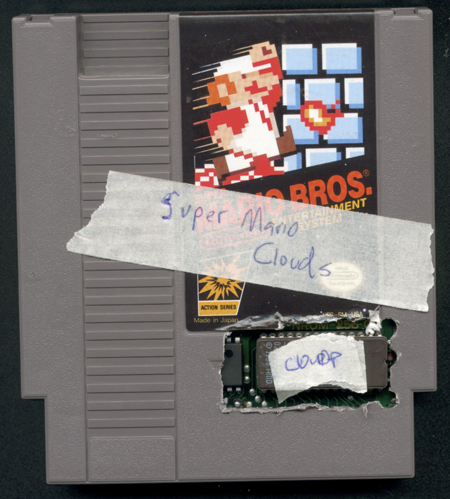
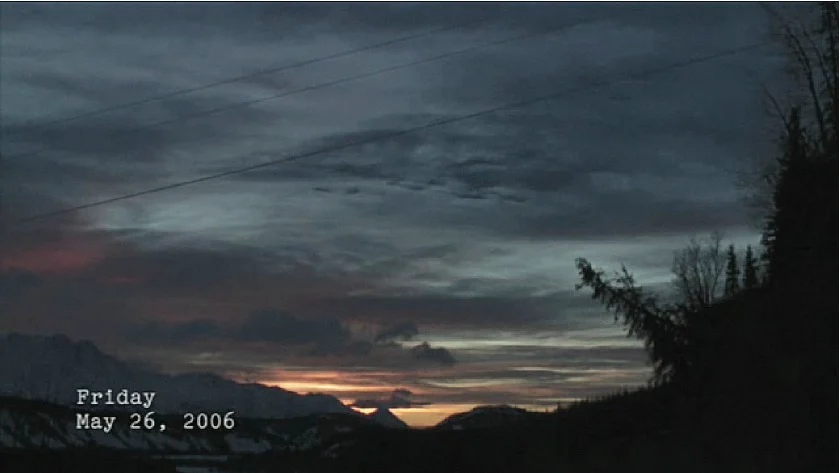
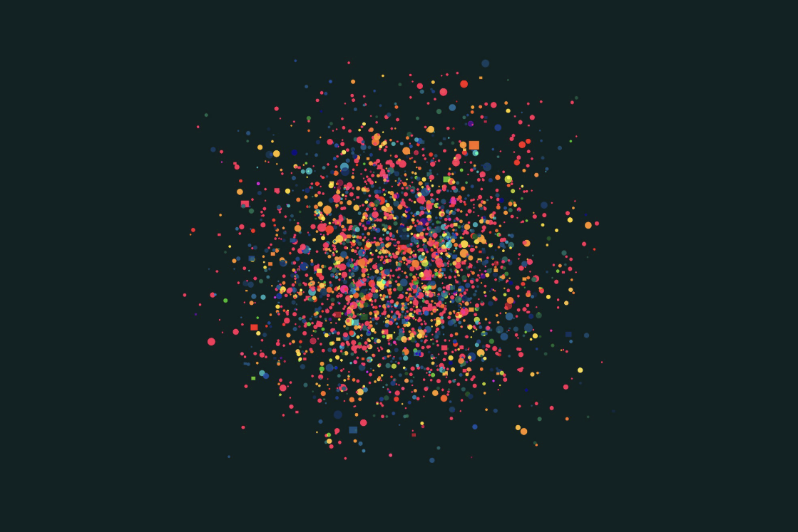

“Emotions, Data, and Empty Screens” brings together three net artworks that reveal how people unintentionally expose pieces of themselves online. Each work uses the internet differently, yet all of them show how personal feelings, habits, and identities leave digital traces behind. Cory Arcangel’s “Super Mario Clouds” strips a familiar game down to drifting clouds, creating a quiet, empty digital space that feels nostalgic and reflective. “I Love Alaska” transforms one woman’s real AOL search history into a narrative, exposing how private thoughts become public once they enter the internet. “We Feel Fine” collects blog posts beginning with “I feel…” and turns them into a visualization of emotions across the web. Together, these works show how the internet quietly holds our data, our feelings, and the fragments we leave behind without realizing it.
Cory Arcangel

A hacked Nintendo cartridge where Arcangel rewrote the code to remove everything except the drifting clouds from Super Mario Bros. The stripped-down scene creates a quiet, empty digital space that feels nostalgic and reflective.
Lernert Engelberts & Sander Plug

A video-based work built from one woman’s real AOL search queries. The searches appear as plain text while a narrator reads them aloud, turning her online activity into an unintended personal story.
Jonathan Harris & Sep Kamvar

A visualization project that collects blog posts beginning with “I feel…” and turns them into a swirling universe of emotions across the internet.